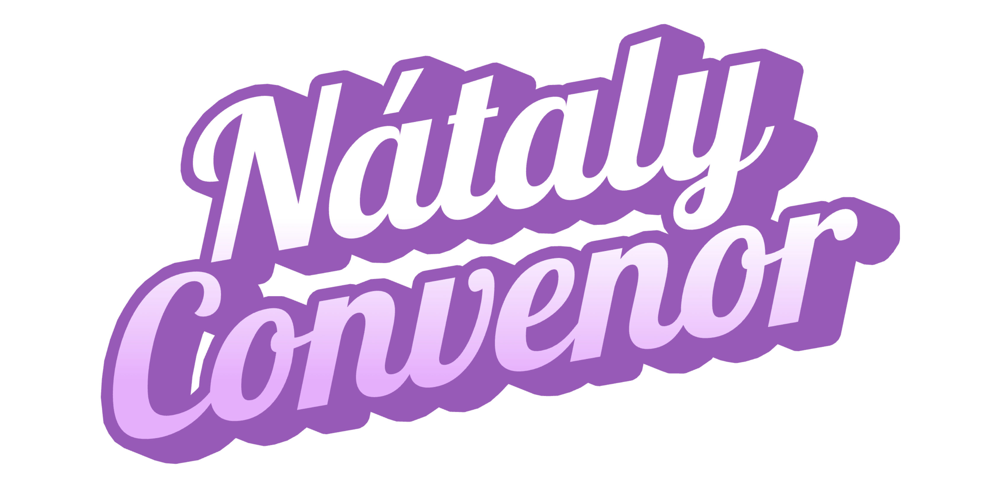
Candidata a Convenor · CND 2026
La transición del CND al formato World Schools es una oportunidad histórica para el debate dominicano. Este proyecto propone cómo hacerlo bien.
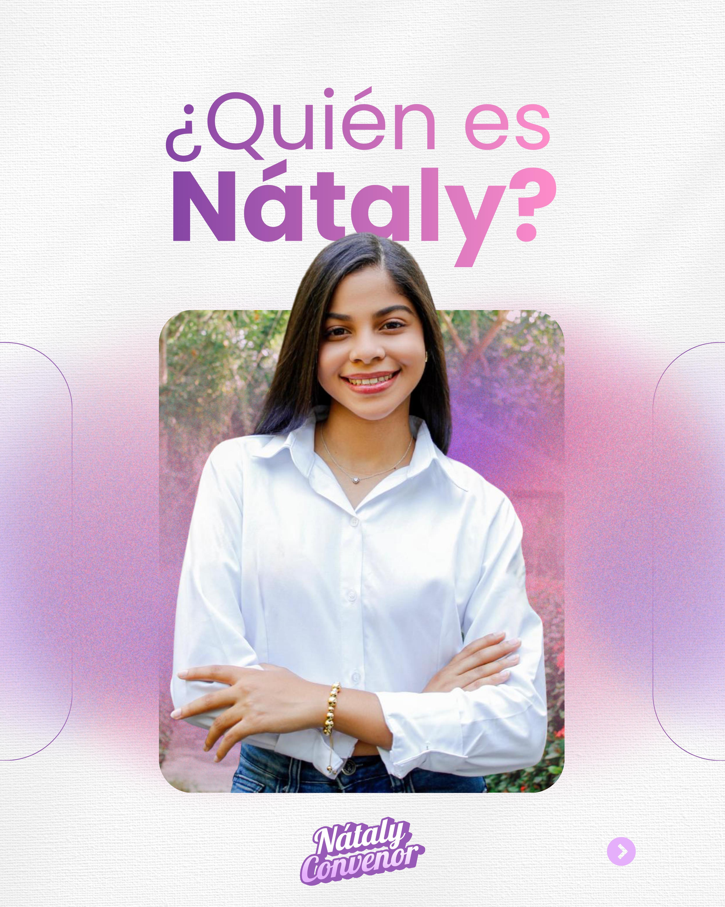
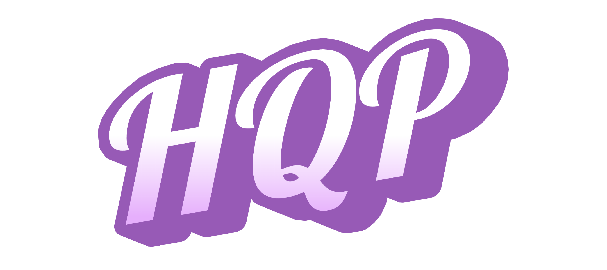
"Construir el campeonato que cada persona necesita para vivir el mejor CND posible."
Las campañas suelen definir una identidad única para un evento. Sin embargo, un campeonato de debate no se vive de una sola manera.
Haz Que Pase nace de reconocer esa diversidad de expectativas. No busca imponer una única forma de vivir el campeonato, sino diseñarlo de manera que pueda responder a las distintas necesidades de quienes participan en él.
Un campeonato no se define por una sola idea. Se construye cuando su diseño permite que muchas visiones coexistan.
Para algunos, el CND ideal es una competencia exigente donde puedan aspirar al break y medir su nivel frente a los mejores equipos.
Para otros, significa un espacio de formación, crecimiento y desarrollo académico genuino.
También están quienes necesitan confiar en la organización, la justicia del proceso de adjudicación y el cumplimiento de la agenda.
Haz Que Pase es una invitación abierta: un sistema donde muchas expectativas distintas encuentran su lugar al mismo tiempo.
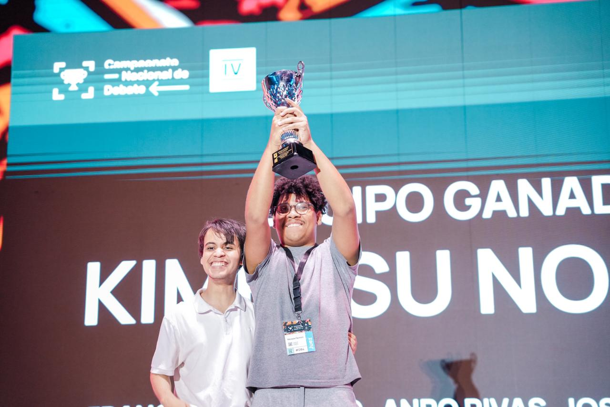
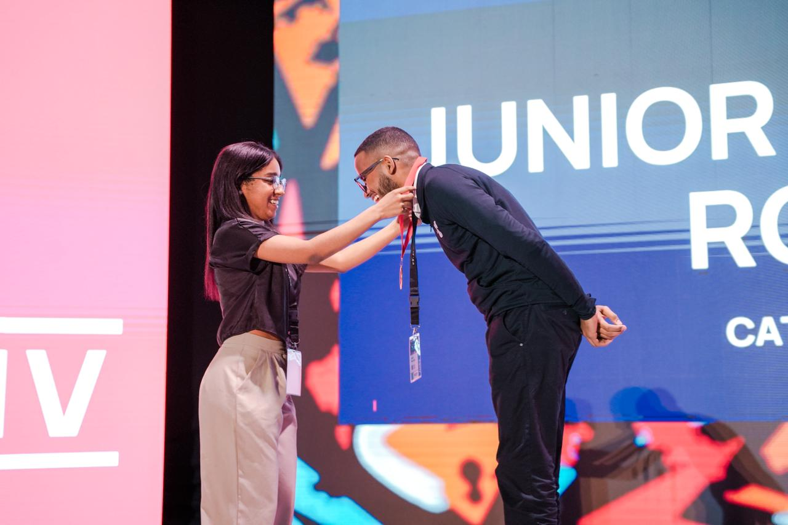
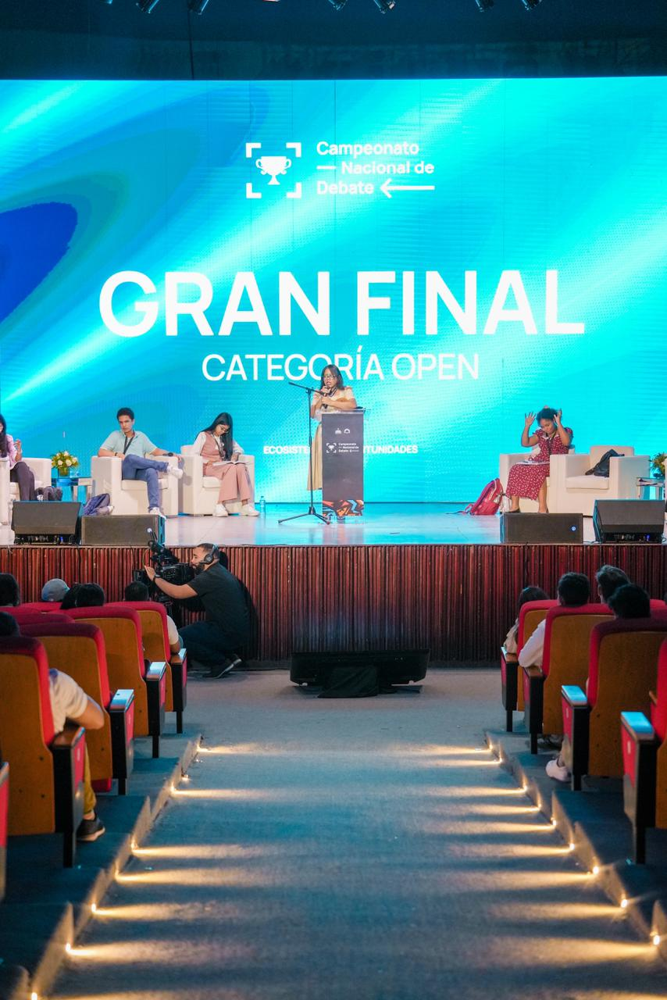
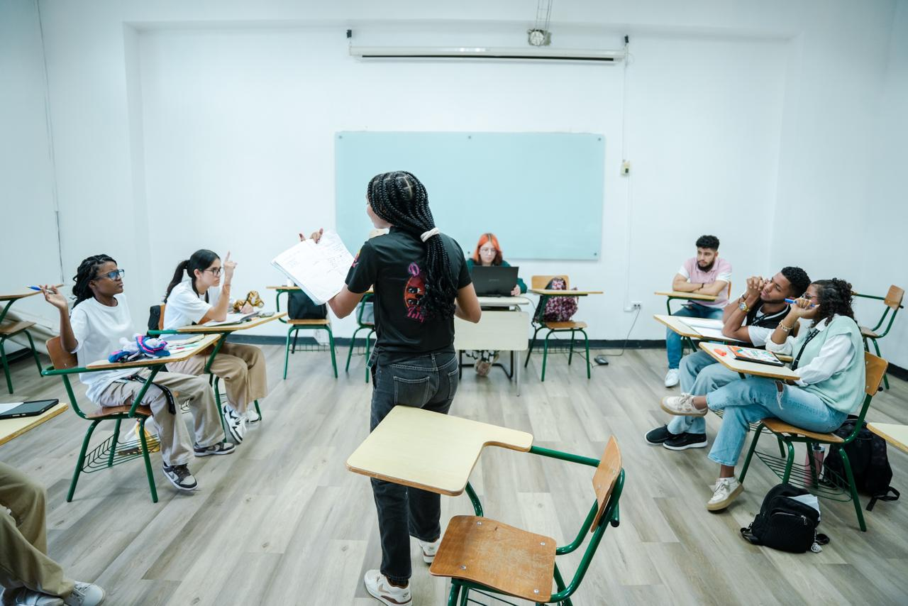
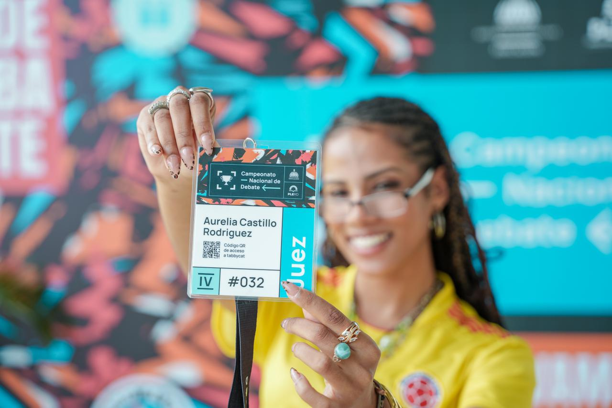
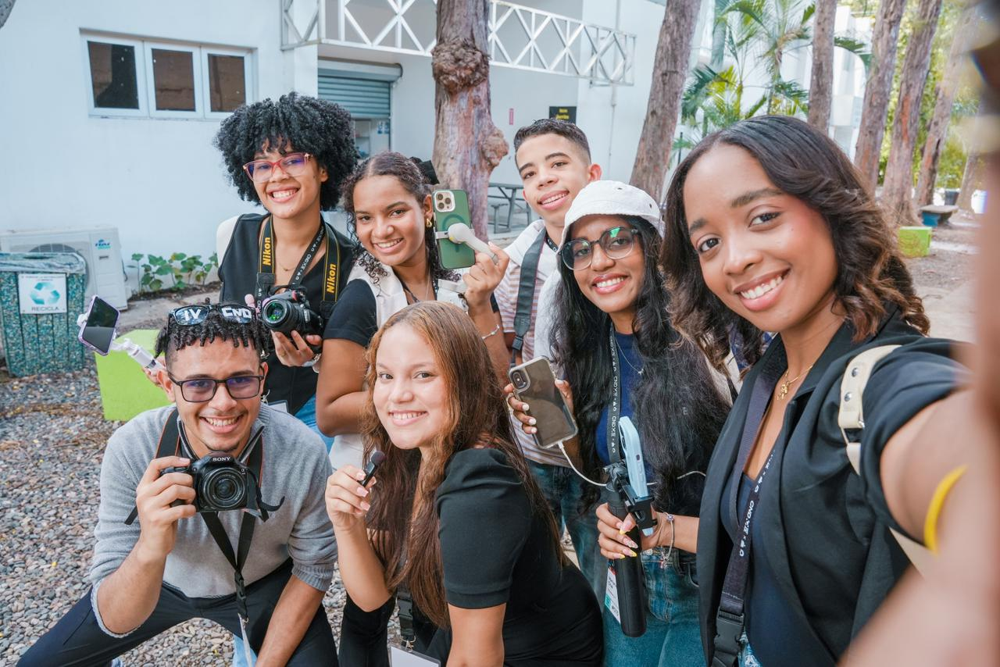
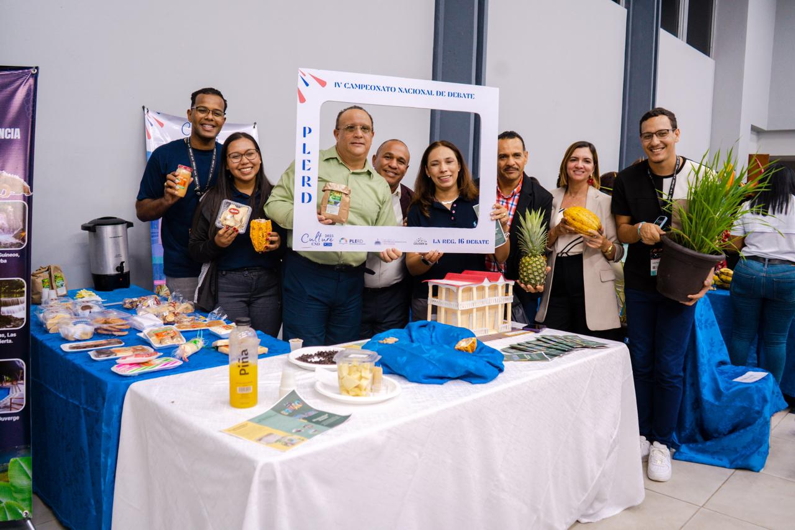
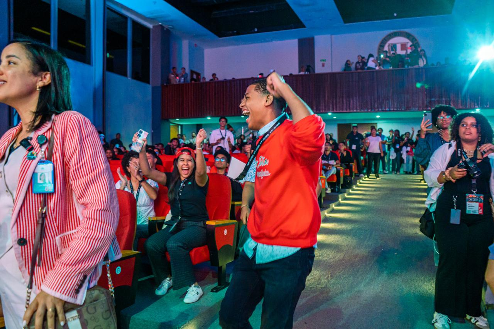
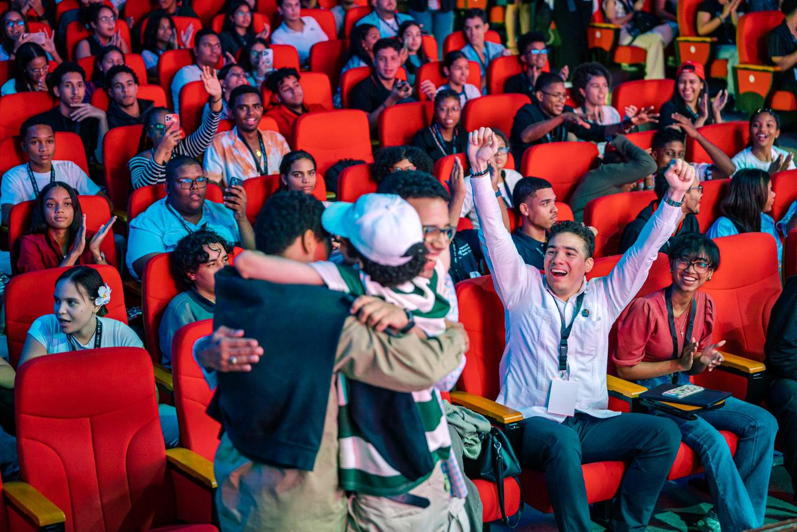
El Convenor es la persona responsable de la organización general del campeonato y de garantizar que el evento se desarrolle conforme a los estándares del World Schools Debating Championship (WSDC). Su función principal consiste en diseñar, coordinar y supervisar la estructura operativa del torneo, asegurando que los distintos componentes funcionen de manera integrada.
Trabaja en coordinación con el Chief Adjudication Panel (CAP), órgano responsable de los aspectos académicos. Mientras el CAP se encarga de la calidad técnica del debate, el Convenor asegura que el campeonato cuente con las condiciones organizativas para un torneo ordenado, justo y eficiente.
Lidera la planificación del evento, supervisa la agenda oficial y coordina al equipo organizador: gestión de espacios, manejo del tiempo y movilidad interna.
Organiza los procesos formativos previos al campeonato, preparando a debatientes, jueces y coaches en el formato WSDC para fortalecer la calidad académica del torneo.
Garantiza que el campeonato se alinee con los estándares internacionales del circuito WSDC, promoviendo excelencia académica y desarrollo sostenible del debate escolar.
La transición del CND hacia el formato WSDC plantea retos claros que debemos abordar de manera estratégica. Reconocerlos con precisión es el primer paso para resolverlos bien.
Baja asistencia a los talleres en el mediano y largo plazo.
Experiencia de las personas juezas y coaches en el nuevo formato.
Abandono de los equipos durante el proceso formativo.
Transportación y movilidad efectiva entre sedes y participantes.
Manejo del tiempo y ejecución de la agenda durante el campeonato.
Manejo, convivencia y eficiencia del Staff Logístico.
Las propuestas responden directamente a los retos académicos y logísticos identificados en el proceso de transición del CND hacia el formato WSDC.
Consultar Manual de Propuestas completoLa transición del CND hacia el formato WSDC implica retos académicos, logísticos y organizativos que requieren una planificación cuidadosa: desde la formación de jueces y coaches en el nuevo formato, hasta la adaptación de la estructura competitiva y la agenda del campeonato.
Esta transición abre una oportunidad histórica para fortalecer la calidad del CND. Por primera vez, la República Dominicana contará con una delegación que representará al país en WSDC 2026 en Kenia, marcando el inicio de una nueva etapa.
Como parte de la construcción de esta candidatura, se ha contado con el acompañamiento y retroalimentación de personas con experiencia directa en el circuito WSDC. Su orientación ha permitido fortalecer el diseño académico y logístico de las propuestas, asegurando que la transición se plantee alineada con los estándares del circuito internacional.
Acompañamiento en la revisión de la estructura académica de las propuestas, incluyendo estándares de adjudicación, formación de jueces y organización del componente académico del campeonato bajo formato WSDC.
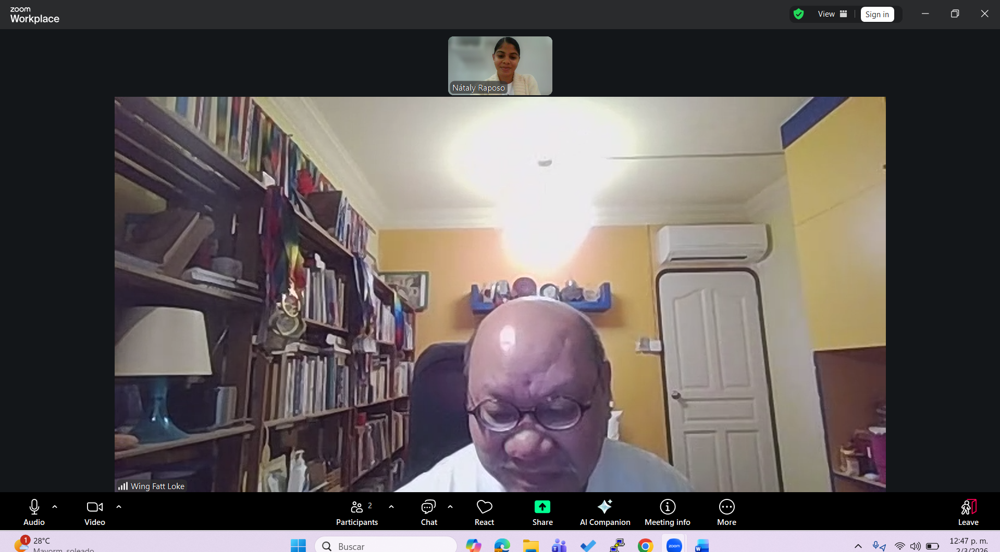
Recomendaciones sobre estructura competitiva, cantidad de rondas y conexión con coaches internacionales hispanohablantes que puedan colaborar en procesos de capacitación durante el desarrollo del CND.
Intercambio de recomendaciones sobre estándares internacionales de adjudicación y organización de campeonatos bajo el formato WSDC.
Orientaciones sobre la organización bajo formato WSDC y apoyo en la conexión con personas y organizaciones internacionales vinculadas al debate escolar.